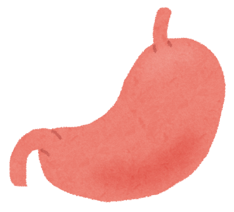

胃
- 腹部の上部、横隔膜のすぐ下に位置する
- 大きく4つの部位に分かれ全長30㎝、容量は約1.5L
- 層構造となっており外から中にかけて
漿膜・筋層・粘膜下層・粘膜が存在する
- 主細胞:ペプシノーゲンを分泌し、塩酸で活性化した後、
ペプシンとしてタンパク質を分解
- 壁細胞:塩酸を分泌し、pH1.5～3.5の強酸性環境を維持
- 粘液細胞:重炭酸イオンを含む粘液を分泌し、胃壁を酸や酵素から保護
- G細胞:ガストリンを分泌し、胃酸分泌や蠕動運動を促進
1(脳)
2(肺)
3(心臓)
5(小腸)
6(大腸)
top